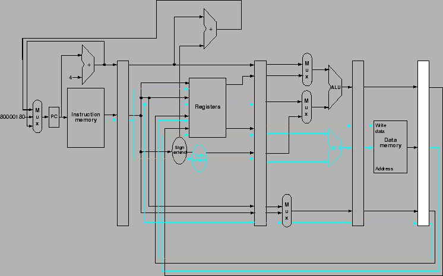

Next: Dynamic Schedule Issue
Up: การเพิ่มประสิทธิภาพโดยเทคนิคไพพ์ลายน์
Previous: Exception บนคอมพิวเตอร์ไพพ์ลายน์
Contents
Index
รูป 6.42 แสดงโปรเซสเซอร์แบบไพพลายน์ที่ทำประมวลผลสองคำสั่งพร้อมกัน
Figure 6.42:
โปรเซสเซอร์แบบไพพลายน์ที่ทำประมวลผลสองคำสั่งพร้อมกัน
|

|
Vara Varavithya
2005-08-18